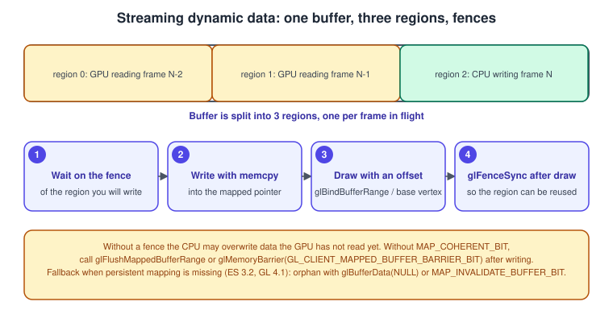
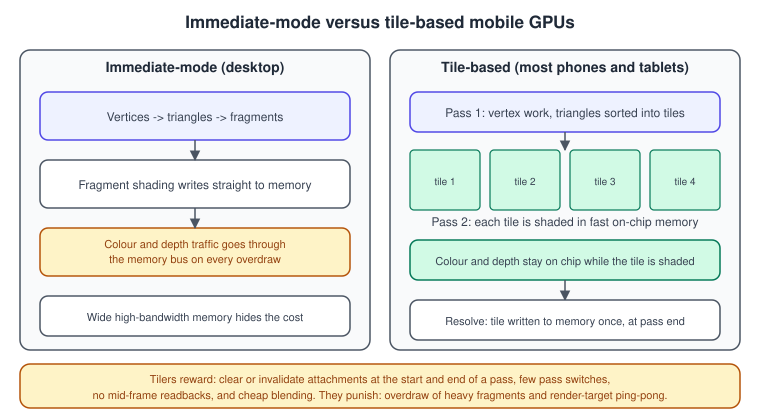

OpenGL Performance
|
This content was generated with the assistance of AI and should be verified against the official documentation before being relied on in production. |
OpenGL performance work is mostly the removal of waiting: the CPU waiting for the driver, the driver waiting for the GPU, and the GPU waiting for memory. The API is old and its driver does a lot of hidden work (validating state, tracking resource hazards, compiling shaders lazily), so the guidance is to give the driver less to do per frame, to avoid the few calls that force a synchronisation, and to measure before changing anything.
The facts were checked in November 2026. The versions documented are OpenGL 4.6 (GLSL 4.60) and OpenGL ES 3.2 (GLSL ES 3.20). Features that need more than the 4.1 baseline of the Bookshelf GL program (persistent mapping needs 4.4, multi-draw indirect and invalidation calls need 4.3) are marked, with the fallback for macOS and ES. The general ideas, shared by every API, are in Performance and Profiling and the hardware background is in GPU Architecture Basics. Debug builds are slower and skew every measurement, so measure release builds, and see Debugging and Tools for the tools used here.
Measure first
A frame has a CPU time (your code plus the driver’s work to record commands) and a GPU time (the hardware executing them). The slower of the two, plus the synchronisation between them, decides the frame rate. Two measurements separate the cases:
-
CPU time per frame: a high-resolution clock around the loop body, excluding the swap and any wait for vertical sync.
-
GPU time per pass: timer queries, which the GPU fills in when it reaches them.
If making the window tiny (fewer pixels) does not change the frame time, the frame is CPU-bound or limited by vertex work. If it scales with the number of pixels, the fragment work dominates. If halving the number of draw calls with identical output helps, the driver overhead is the bottleneck.
GPU timer queries
GL_TIME_ELAPSED measures the time between glBeginQuery and glEndQuery. glQueryCounter with GL_TIMESTAMP
records an absolute time that can be subtracted. Timer queries are core since OpenGL 3.3 (ARB_timer_query). OpenGL ES 3.2
does not include them; ES contexts use the EXT_disjoint_timer_query extension where the device provides it. Read the
result a few frames later; reading immediately forces the CPU to wait for the GPU, which destroys the measurement.
#include <glad/gl.h>
#include <array>
#include <cstdint>
// Ring of queries so that results are read two or three frames after they were issued.
class GpuTimer {
public:
GpuTimer() { glGenQueries((GLsizei)queries_.size(), queries_.data()); }
~GpuTimer() { glDeleteQueries((GLsizei)queries_.size(), queries_.data()); }
void begin() { glBeginQuery(GL_TIME_ELAPSED, queries_[write_]); }
void end() {
glEndQuery(GL_TIME_ELAPSED);
issued_[write_] = true;
write_ = (write_ + 1) % queries_.size();
}
// Returns the newest finished result in milliseconds, or the previous value if none is ready.
double pollMilliseconds() {
for (size_t i = 0; i < queries_.size(); ++i) {
size_t idx = (write_ + i) % queries_.size(); // oldest first
if (!issued_[idx]) continue;
GLint available = 0;
glGetQueryObjectiv(queries_[idx], GL_QUERY_RESULT_AVAILABLE, &available);
if (!available) continue;
GLuint64 ns = 0;
glGetQueryObjectui64v(queries_[idx], GL_QUERY_RESULT, &ns);
issued_[idx] = false;
last_ = double(ns) * 1e-6;
}
return last_;
}
private:
std::array<GLuint, 4> queries_{};
std::array<bool, 4> issued_{};
size_t write_ = 0;
double last_ = 0.0;
};
// Use:
// GpuTimer shadowTimer;
// shadowTimer.begin(); drawShadowPass(); shadowTimer.end();
// printf("shadow pass %.2f ms\n", shadowTimer.pollMilliseconds());Only one query of a given target can be active at a time, so nested GL_TIME_ELAPSED queries are an error. For
nested timing, use glQueryCounter with GL_TIMESTAMP at each boundary and subtract the results. Quantities from timer
queries are in nanoseconds and measure only the GPU, so they cannot see CPU stalls; pair them with a CPU timer.
Vertical sync
glfwSwapInterval(1) asks the swap to wait for the display refresh, which caps the rate at the monitor’s and makes the
CPU block inside glfwSwapBuffers. Turn it off (glfwSwapInterval(0)) when profiling, otherwise a program that renders
in 3 ms still shows 16.7 ms frames and the real cost is hidden. Frame-pacing and timing concerns are covered in
Game Loop and Frame Timing.
Reduce the cost of each draw
State changes and sorting
Every change of program, texture, framebuffer or vertex array makes the driver validate and re-emit hardware state. Roughly ordered from most to least expensive: changing the framebuffer, changing the program, changing textures and samplers, changing the vertex array or its bindings, changing uniforms, changing blend and depth state. Sort draw calls so the expensive changes happen least often, and within the same program group by material, then by mesh.
#include <glad/gl.h>
#include <algorithm>
#include <cstdint>
#include <vector>
struct DrawItem {
uint16_t pass; // shadow, opaque, transparent, ui
uint16_t program; // small index, not the GL name, so the key stays compact
uint16_t material;
uint16_t depthBucket; // front-to-back for opaque, back-to-front for transparent
GLuint vao;
GLsizei indexCount;
const void* indexOffset;
};
inline uint64_t sortKey(const DrawItem& d, bool transparent) {
uint64_t depth = transparent ? uint64_t(0xFFFF - d.depthBucket) : d.depthBucket;
return (uint64_t(d.pass) << 48) | (uint64_t(d.program) << 32)
| (uint64_t(d.material) << 16) | depth;
}
void submit(std::vector<DrawItem>& items) {
std::sort(items.begin(), items.end(),
[](const DrawItem& a, const DrawItem& b) { return sortKey(a, false) < sortKey(b, false); });
GLuint lastVao = 0;
uint16_t lastProgram = 0xFFFF, lastMaterial = 0xFFFF;
for (const DrawItem& d : items) {
if (d.program != lastProgram) { /* glUseProgram(programs[d.program]); */ lastProgram = d.program; }
if (d.material != lastMaterial) { /* bind textures and material UBO range */ lastMaterial = d.material; }
if (d.vao != lastVao) { glBindVertexArray(d.vao); lastVao = d.vao; }
glDrawElements(GL_TRIANGLES, d.indexCount, GL_UNSIGNED_SHORT, d.indexOffset);
}
}Opaque geometry sorted front to back also helps the hardware reject hidden fragments early (see overdraw below); transparent geometry must be sorted back to front to blend correctly, so it takes the opposite order within its pass.
Batching, instancing and multi-draw
The cost of a draw call in OpenGL is mostly CPU time in the driver, so fewer calls with more work each is the main lever. In order of how much they change:
-
Merge static geometry that shares a material into one vertex and index buffer, so one
glDrawElementsrenders many objects. -
Instancing (
glDrawElementsInstanced, core in 3.1, ES 3.0) draws the same mesh many times with per-instance data, which is how the Bookshelf draws many identical books; see Instancing and indirect drawing. -
Multi-draw indirect (
glMultiDrawElementsIndirect, core in 4.3 and not part of ES 3.2 core) issues many draws from a buffer in one call, and the buffer can be filled by a compute shader for GPU-driven culling. -
Base vertex and base instance (
glDrawElementsBaseVertex,glDrawElementsInstancedBaseVertexBaseInstance) allow several meshes to live in one buffer without rewriting indices.
Older books and tutorials say that "thousands of draw calls per frame" is the practical limit on a mobile or desktop driver of their time. Measure on your own target instead: a modern desktop driver comfortably handles many thousands of simple calls, mobile drivers fewer, and the limit depends on the state changed between draws.
Textures: atlases, arrays and compression
Binding a texture per object is a state change. Two ways to avoid it while keeping sampler behaviour correct:
-
A texture atlas packs many small images into one texture, with padding of a few pixels around each tile to stop bilinear filtering and mipmaps from bleeding neighbours into each other. Wrapping modes do not work per tile.
-
A texture array (
GL_TEXTURE_2D_ARRAY, core in 3.0 and ES 3.0) stores same-size layers that keep their own wrap and mipmap behaviour and are indexed with a third coordinate. Bookshelf could store the three book covers as layers. Array texture size limits are queried withGL_MAX_ARRAY_TEXTURE_LAYERS.
Compressed formats reduce memory bandwidth, which is often the real limit. BC (also called S3TC and DXT) formats are
for desktop, ETC2 is mandatory in OpenGL 4.3 and in ES 3.0, and ASTC is available on most current mobile hardware and
some desktop drivers through KHR_texture_compression_astc_ldr. The portable approach is to ship Basis Universal
compressed KTX2 files and transcode at load time to whichever block format the device supports; see
Asset loading with glTF and OBJ and
Textures, Sampling and Mipmaps. Always generate mipmaps for
minified textures: they improve cache behaviour as well as quality.
Stream data without stalling
Dynamic data (per-frame matrices, particle positions, UI vertices) must reach the GPU while the GPU may still be reading the previous frame’s version of the same buffer. If you write into memory the GPU has not finished reading, the driver must either wait or make a copy. The strategies below are listed from simplest to most efficient.

-
glBufferSubData with the whole buffer replaced each frame: simplest, and acceptable for small data.
-
Orphaning: call
glBufferDatawithNULLdata (orglInvalidateBufferData, 4.3) so the driver hands you fresh storage while the GPU finishes with the old one. Combine withglMapBufferRange(GL_MAP_WRITE_BIT | GL_MAP_INVALIDATE_BUFFER_BIT). -
Unsynchronised mapping:
GL_MAP_UNSYNCHRONIZED_BITtells the driver you take responsibility for not overwriting data in use. It is safe only with your own fencing or a ring of regions. -
Persistent mapping (core in 4.4,
ARB_buffer_storage): create immutable storage withglBufferStorage, map it once withGL_MAP_PERSISTENT_BITand keep the pointer for the buffer’s lifetime. AddGL_MAP_COHERENT_BITso writes are visible to the GPU without extra calls; without it, callglFlushMappedBufferRange. Split the buffer into one region per frame in flight and use fences to know when a region is free.
#include <glad/gl.h>
#include <cstring>
#include <array>
// Triple-buffered streaming buffer (OpenGL 4.4). Needs a fence per region.
class StreamBuffer {
public:
explicit StreamBuffer(GLsizeiptr bytesPerFrame) : region_(bytesPerFrame) {
const GLbitfield flags = GL_MAP_WRITE_BIT | GL_MAP_PERSISTENT_BIT | GL_MAP_COHERENT_BIT;
glCreateBuffers(1, &buffer_);
glNamedBufferStorage(buffer_, region_ * kRegions, nullptr, flags);
ptr_ = static_cast<unsigned char*>(
glMapNamedBufferRange(buffer_, 0, region_ * kRegions, flags));
}
~StreamBuffer() {
glUnmapNamedBuffer(buffer_);
glDeleteBuffers(1, &buffer_);
for (GLsync f : fences_) if (f) glDeleteSync(f);
}
// Call once at the start of each frame; returns the byte offset of this frame's region.
GLintptr beginFrame() {
current_ = (current_ + 1) % kRegions;
if (GLsync f = fences_[current_]) {
// Wait (rarely blocks) until the GPU is done with this region's previous use.
while (glClientWaitSync(f, GL_SYNC_FLUSH_COMMANDS_BIT, 1'000'000) == GL_TIMEOUT_EXPIRED) {}
glDeleteSync(f);
fences_[current_] = nullptr;
}
return current_ * region_;
}
void write(GLintptr offsetInRegion, const void* data, size_t size) {
std::memcpy(ptr_ + current_ * region_ + offsetInRegion, data, size);
}
// Call after the draw calls that read the region.
void endFrame() { fences_[current_] = glFenceSync(GL_SYNC_GPU_COMMANDS_COMPLETE, 0); }
GLuint buffer() const { return buffer_; }
private:
static constexpr int kRegions = 3;
GLuint buffer_ = 0;
GLsizeiptr region_;
unsigned char* ptr_ = nullptr;
int current_ = 0;
std::array<GLsync, kRegions> fences_{};
};On macOS (4.1) and ES 3.2 persistent mapping is not core, so use orphaning with glMapBufferRange and
GL_MAP_INVALIDATE_BUFFER_BIT, or glBufferSubData for small updates. Sync objects are explained on
Sync, queries and transform feedback.
Avoid the synchronisation points
Some calls make the CPU wait for the GPU, and the result is a pipeline bubble: the CPU cannot queue work while it waits and the GPU idles while the CPU resumes. Typical offenders:
-
glReadPixels,glGetTexImage,glGetBufferSubDataandglMapBufferof a buffer the GPU is writing. Read back through a pixel pack buffer and a fence (asynchronous readback) and use the data one or two frames later. -
glFinish. Almost never needed;glFlushis rarely needed either. -
glGetErrorin the hot path (see the debugging page),glGetUniform*and other state queries on a context driven by another thread. -
glGetQueryObjectwithout checkingGL_QUERY_RESULT_AVAILABLEfirst. -
Shader compilation and linking on first use, and first-use texture uploads, which cause hitches (below).
Shader compilation and program binaries
Compilation and linking can take tens of milliseconds for a large shader, and drivers often defer real compilation to the first draw. Strategies:
-
Compile and link all programs at load time and draw a tiny primitive with each, if first-draw hitches show up in captures.
-
KHR_parallel_shader_compile(an extension, so check forGLAD_GL_KHR_parallel_shader_compile) lets the driver compile on worker threads: callglMaxShaderCompilerThreadsKHR, then pollGL_COMPLETION_STATUS_KHRinstead of querying the compile status immediately. -
Cache linked programs with
glGetProgramBinaryand restore withglProgramBinary(core in 4.1 and ES 3.0). Binary formats are driver specific and may be rejected after a driver update, so keep the source as the fallback. See Shaders and programs. -
SPIR-V shaders (
ARB_gl_spirv, core in 4.6) skip the GLSL front end, though the driver still compiles the intermediate code to machine code.
Fragment cost: overdraw and bandwidth
Fragment shading is often the dominant cost. Reduce it by drawing fewer fragments and by making each cheaper:
-
Overdraw: draw opaque geometry front to back so early depth testing rejects hidden fragments before the shader runs. A shader that writes
gl_FragDepth, usesdiscard, or alters coverage can disable early testing on some hardware. An optional depth pre-pass trades a cheap vertex-only pass for no shading of hidden fragments. -
Resolution: render at a lower resolution and upscale when the fragment cost dominates; a dynamic resolution scale is a common control loop.
-
MSAA and HDR targets multiply bandwidth: an RGBA16F target with 4 samples is eight times the memory traffic of RGBA8 with one sample. See Antialiasing and HDR.
-
Texture fetches: pack data into fewer channels, use compressed formats and mipmaps, and avoid dependent reads in loops.
-
Precision: on mobile GPUs,
mediumpcomputations can be significantly faster thanhighp(see GLSL ES and portability); desktop drivers ignore the qualifier.
Tile-based mobile GPUs
Most phones and tablets use a tile-based architecture: the screen is divided into small tiles, geometry is binned into tiles first, and each tile is shaded in fast on-chip memory and written out once. This changes which OpenGL habits are cheap and which are costly.

Practical rules for ES 3.x on a tiler:
-
Start every pass with
glClearon all attachments you will write, or tell the driver the old contents are not needed. Loading the previous contents of a tile from memory costs bandwidth. -
End a pass by calling
glInvalidateFramebuffer(core in ES 3.0 and GL 4.3) for attachments you will not read afterwards, typically the depth and stencil buffers, so the tile is not written to memory. -
Keep the number of framebuffer switches low, and do not switch back and forth (ping-pong) between render targets in one frame. Each switch can force a resolve of the tile.
-
Do not read from a framebuffer mid-pass (
glReadPixels,glCopyTexImage2D, or sampling a texture currently attached), which flushes the tile. -
Alpha blending is cheap on a tiler since the destination is on chip, but overdraw of heavy fragment shaders is not.
-
Extensions such as framebuffer fetch let a fragment shader read the current colour without leaving the tile; they are vendor specific, so keep a fallback.
#include <glad/gl.h>
void renderScenePass(GLuint fbo, int width, int height) {
glBindFramebuffer(GL_FRAMEBUFFER, fbo);
glViewport(0, 0, width, height);
// Cheap on a tiler: nothing needs to be loaded from memory.
glClearColor(0.05f, 0.05f, 0.08f, 1.0f);
glClear(GL_COLOR_BUFFER_BIT | GL_DEPTH_BUFFER_BIT | GL_STENCIL_BUFFER_BIT);
// ... draw shelf, books, lamp ...
// The depth and stencil contents are not used after this pass: do not write them out.
const GLenum discardList[] = {GL_DEPTH_ATTACHMENT, GL_STENCIL_ATTACHMENT};
glInvalidateFramebuffer(GL_FRAMEBUFFER, 2, discardList);
}On OpenGL ES 3.0 the same call exists as glInvalidateFramebuffer; for the default framebuffer, the attachments are named
GL_DEPTH and GL_STENCIL instead. Android-specific details are in OpenGL ES on Android.
A short tuning checklist
-
Release build, vertical sync off, a fixed camera path; record CPU time and per-pass GPU time.
-
Is the frame CPU-bound? Reduce draw calls (merge, instance, multi-draw), state changes (sort), and driver work (cache bindings in your own state tracker and skip redundant calls).
-
Is it GPU-bound? Reduce resolution or overdraw, simplify fragment work, compress textures, use mipmaps, check render target formats.
-
Remove synchronisation points; stream with a ring buffer and fences.
-
On mobile, check clears, invalidation and framebuffer switches; capture with the vendor profiler.
-
Re-measure after every change. Keep changes that reduce the worst frames, not only the average.
Recent changes
-
Persistent mapped buffers (OpenGL 4.4), direct state access (4.5) and multi-draw indirect (4.3) are the tools that reduce driver overhead in current OpenGL; they replaced many older tricks such as display lists and client-side vertex arrays.
-
Mesh shaders (the
GL_EXT_mesh_shaderextension added to the registry in 2025) move geometry processing to a compute-style stage; see Mesh shaders. -
Where the driver overhead of OpenGL is the limit, the explicit APIs move that work to the application; see Explicit vs Implicit APIs and Porting to Vulkan, Metal and WebGPU.